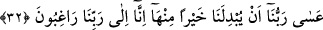

31. (Nihâyet) şöyle dediler: Yazıklar olsun bize! Gerçekten biz azgın kişilermişiz.
Şöyle dediler; Yazıklar olsun bize! Gerçekten biz haddi aşanlarmışız. Allah’ın
koyduğu sınırı aşanlarmışız.
Yâni onlar, kendi günahlarını itirâf ettiler ve yüzlerini niyâza döndürdüler. “Bize
eyvahlar olsun! Biz günah konusunda haddi aşanlardan olmuş, fakirleri mahrûm etmişiz”
dediler.
32. Belki Rabbimiz bize bunun yerine daha iyisini verir. Çünkü biz (artık)
Rabbimizi(O’nun hoşnutluğunu) arzuluyoruz.
“Belki Rabbimiz” -ki O’nun kereminden ümitvarız- “bize” tevbemizin ve günahımızı
itirâfımızın bereketiyle “bunun yerine”, bu helâk olan bahçemize bedel olarak “daha
iyisini verir. Çünkü biz Rabbimizi arzuluyor,” O’nun affını umuyoruz, hayrını diliyoruz.
Âyette yer alan “ilâ” harf-i cerri ummanın ve arzu etmenin ulaştığı son noktayı
göstermektedir. Burada “ilâ” harf-i cerri Rab kelimesinin önünde yer aldığına göre,
“arzulanan”ın Rab olduğu ortaya çıkmaktadır. Çünkü Allah, onların ümid ve taleplerinin
ulaştığı son noktadır. Veya burada “ilâ” harf-i cerrinin getirilmesi, fiilin “rücû: dönmek”
mânâsını kendi bünyesinde içermesinden dolayıdır. Eğer böyle demeyecek olursak
Arapçada meşhûr olan kurala göre “rağbet” kelimesi “fî” veya “an” harf-i cerleri ile
geçişli olur. Yoksa âyette olduğu gibi “ilâ” harfi cerriyle geçişli olmaz.
Rivâyete göre söz konusu bahçenin sâhibi olan üç kardeş, kendi aralarında sözleşirler
ve derler ki: “Allah, bize helâk olan bahçemizin yerine daha hayırlısını verirse
babamızın yaptığının aynısını biz de yapalım.” Peşinden Allah’a duâ ederler, yakarırlar.
Bunun üzerine Allah Teâlâ o gece bunlara eski bahçelerinden daha iyi bir bahçe verir.
Âlimlerin ifâdesine göre Allah Teâlâ Cebrâil’e o yanmış olan bahçeyi yerinden söküp
almasını ve Şam diyarında bitkisi az olan bir yere koymasını ve oradan bir bahçe
alarak, onu getirip bu bahçenin yerine koymasını emreder.
İbn Mesud (r.a.) der ki: Bahçe sâhibi üç kardeş Allah’a samîmiyetle dönünce ve
Allah onların sözlerinde sâdık olduklarını bildiğinden ellerindeki bahçelerine bedel
olarak onlara daha hayırlı bir bahçeyi nasip etmiştir. Bu bahçeye “el-Hayevan”
deniyordu. İçerisinde yetişen üzümün sâdece bir salkımını bir katır götürebiliyordu.
Ebû Hâlid Yemânî der ki: Ben o bahçeye girdim, orada her bir salkımın ayakta duran
esmer bir adam kadar olduğunu gözlerimle gördüm.
Muhakkikler demişlerdir ki; kim bir belâya müptelâ olur, malı menâlı telef olursa bu
kimsenin iyi düşünmesi, bu belânın kendi yaptıkları sebebiyle indiğini bilmesi gerekir.
Sonra günahını itirâf ederse Allah Teâlâ ondan aldıklarından daha iyi ve daha güzelini,
“Bostân-ı Hayvân” ve “Bağ-ı Zarvân” gibi bahçeleri kendisine geri verir